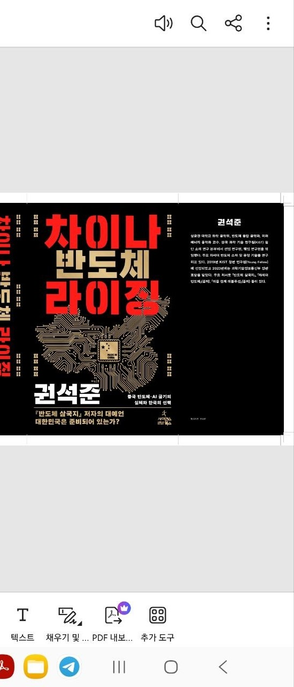

기술과 전략을 잇는 저술 활동Writings that Bridge Technology and Strategy连接技术与战略的著述
반도체 산업 전략서 5권을 포함한 6권의 저서. 베스트셀러 『반도체 삼국지』, 2024 세종도서 학술부문 선정 『차세대 반도체』, 2026년 신간 『차이나 반도체 라이징』.Author of 6 books including 5 on semiconductor strategy. Bestseller "Three Kingdoms of Semiconductor," 2024 Sejong Book Award winner "Next Generation Semiconductor," and upcoming "China Semiconductor Rising" (Apr 2026).著有6部作品，其中5部聚焦半导体产业战略。畅销书《半导体三国志》、2024年世宗图书学术奖获奖作品《新一代半导体》及2026年新书《中国半导体崛起》。

반도체 삼국지Three Kingdoms of Semiconductor半导体三国志
한·중·일 반도체 산업의 현황, 역사, 미래 구도를 기술전략적 관점에서 분석.Strategic analysis of Korea-China-Japan semiconductor dynamics.从技术战略视角分析韩中日半导体产业的现状、历史与未来格局。
베스트셀러Bestseller畅销书
차세대 반도체Next Generation Semiconductor新一代半导体
최종현학술원 웨비나 기반 차세대 반도체 기술·전략 종합서. 2024 세종도서 학술부문 선정.Comprehensive work on next-gen semiconductor tech & strategy. 2024 Sejong Book Award (Academic).基于崔钟贤学术院研讨회的新一代半导体技术·战略综合著作。2024年世宗图书学术奖。
세종도서 선정Sejong Award世宗图书奖
미중 관계 레볼루션Revolution of the US-China Relation美中关系革命
미·중 기술 패권 경쟁의 구조적 분석과 한국의 전략적 포지셔닝.Structural analysis of US-China tech rivalry and Korea's strategic positioning.美中技术霸权竞争的结构性分析与韩国的战略定位。

차이나 반도체 라이징China Semiconductor Rising中国半导体崛起
중국 반도체 산업의 부상과 글로벌 공급망 재편을 심층 분석한 최신작. 2026년 4월 출판 예정.In-depth analysis of China's semiconductor rise and global supply chain restructuring. Publication: April 2026.深入分析中国半导体产业崛起与全球供应链重构。预计2026年4月出版。
신간 (2026.04)New (Apr 2026)新书 (2026.04)호기심과 끈기 / 번역서 외Curiosity & Perseverance / Others好奇心与毅力 / 译著等
전자책 『호기심과 끈기』(2022), 번역서 『석유시대의 종말(Out of Gas)』(2006).E-book "Curiosity & Perseverance" (2022), translation of "Out of Gas" (2006).电子书《好奇心与毅力》(2022)，译著《石油时代的终结》(2006)。